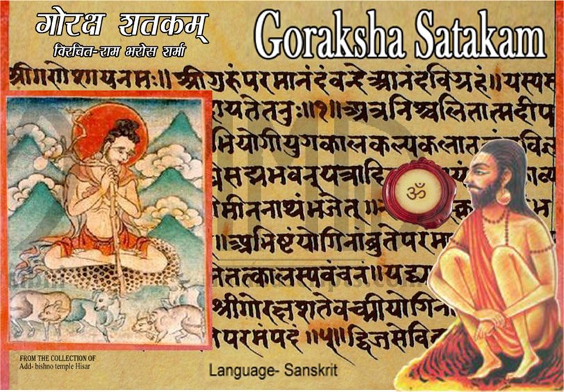
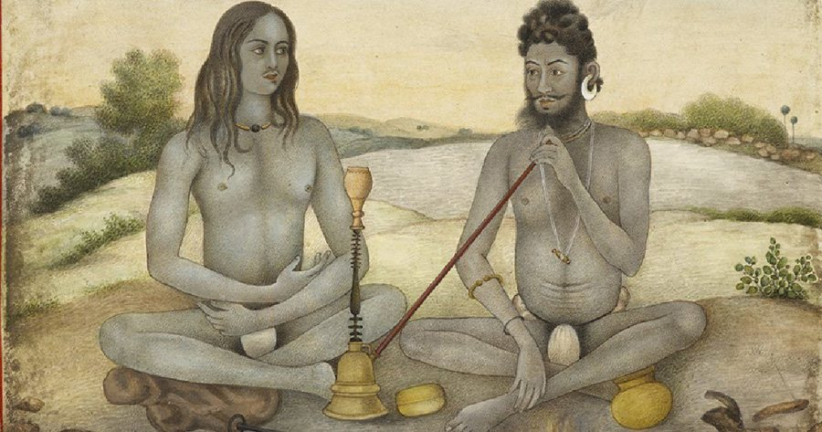
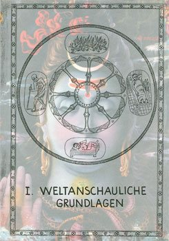
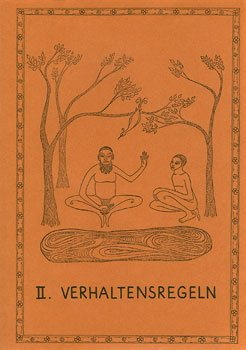
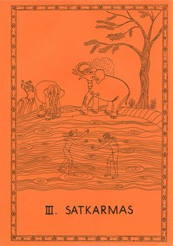
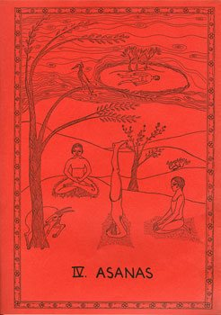
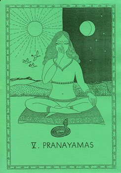
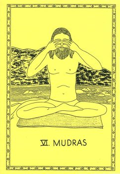
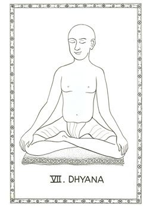
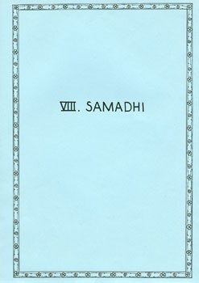

Original-Yoga
Klassischer Hatha-Yoga lässt sich eindeutig eingrenzen: durch die Überlieferung von Goraksha, die Hathayoga-Pradipika, die Gheranda-Samhita und die Shiva-Samhita.
Goraksha
Goraksha ist der historische Begründer des Hatha-Yoga und lebte um 950 – 1050 n. Chr. Er ist der Verfasser der ersten Schrift über Hatha-Yoga, mit dem schlichten Titel Hatha-Yoga. Dieser Urtext, der dieser heute weltweit bedeutenden Bewegung den Namen gegeben hat, ist angeblich verloren gegangen.
Sein Inhalt ist aber sicher in Gorakshas Folgewerken enthalten: im Goraksha-Shataka („Gorakshas hundert Sprüche“) und in der Goraksha-Paddhati („Gorakshas Fußpfad“). Zu seinen ersten Anhängern gehören die Kanphata-Yogis, die als Erkennungszeichen große Ringe in ihren Ohren tragen.
Wer als Yoga-Übender keine Ahnung von Goraksha hat, ist ungefähr so fachkundig wie ein Christ, der über Jesus nichts weiß.
Goraksha-Shataka im Original lesen
Katzen sind keine Löwen

Indien lässt sich geografisch eindeutig verorten: im Norden der Himalaya, im Süden Sri Lanka, rundherum der Indische Ozean. Genauso lässt sich der traditionelle Yoga mit Körpertraining – der Hatha-Yoga – eindeutig mit der Überlieferung von Goraksha, der Hathayoga-Pradipika, der Gheranda-Samhita und der Shiva-Samhita eingrenzen.
Begriffe aus dem Hatha-Yoga für die bei uns verbreiteten gymnastischen Übungen zu verwenden, ist ungefähr so, als würde man unsere Katzen ernsthaft Löwen nennen oder unsere Kühe Elefanten – obwohl es Übereinstimmungen gibt, etwa vier Beine. Dass sich Körperübungen ähneln, lässt sich kaum vermeiden: Der Mensch verfügt über viele grundsätzliche Bewegungsmuster, die überall auf der Welt trainiert werden.
Was wir machen, ist klassischer Hatha-Yoga – also Original-Yoga im Zusammenhang mit Körpertraining. Im Idealfall wird bei jeder praktischen Übung genau gesagt, wo und wie sie in der Original-Überlieferung beschrieben ist und welche Bedeutung sie dort hat.
Und der Bezug zum Original-Yoga wird bei uns schon ab der ersten Anfänger-Stunde hergestellt.
Vier Texte, die man kennen sollte
Wer den Yoga, den wir hier beschreiben, mit Büchern, Artikeln oder Kursen vergleichen will, die ebenfalls „Yoga“ heißen, braucht sich nur diese vier Begriffe zu merken.
| Text | Umfang | Asanas | Schwerpunkt |
|---|---|---|---|
| Goraksha-Paddhati„Gorakshas Fußpfad“, um 950 – 1050 n. Chr. | ca. 200 Sutren | ca. 6, mit max. 40 Sutren | Pranayama als Weg zur Mystik, Erweckung der Kundalini, Samadhi (Sammlung) |
| Hathayoga-Pradipika„Die Leuchte des Hatha-Yoga“ | ca. 390 Sutras | ca. 50 Sutras | ca. 160 Sutras Pranayama mit Mudras; wichtigster Grundlagentext des Raja-Yoga |
| Gheranda-Samhita„Die Schriftsammlung des Meisters Gheranda“ | ca. 360 Sutras | 32 – 36 Asanas | Am besten strukturiert, sieben Kapitel; wichtigster Originaltext für das Körpertraining |
| Shiva-Samhita„Schriftsammlung Shivas“ | ca. 540 Sutras | 7 Asanas, max. 30 Sutras | Weltanschauliche Grundlagen (Tantra, Vedanta), Pranayama, Mudras, Chakra-Meditation |
Hathayoga-Pradipika
„Kundalini-Yoga“ wird heute oft verkitscht als eigene Yogaform popularisiert. Das Original zur Erweckung der Kundalini-Kraft im Zusammenhang mit Körpertraining ist in den Hatha-Yoga-Texten überliefert – besonders im 3. Kapitel der „Leuchte des Hatha-Yoga“, im Kapitel über die Mudras, wo Shakti-Calani behandelt wird, die Praxis zur Erweckung der Shakti.
Gheranda-Samhita
Sieben Kapitel: Körperreinigungen (Satkarmas), Körperstellungen (Asanas), ein kurzes Kapitel über den Sinnesrückzug (Pratyahara), Pranayamas, Mudras, Meditation (Dhyana) und Samadhi, den Zustand höchster Sammlung.
Shiva-Samhita
Dieser Text soll vom mythischen Begründer des Hatha-Yoga verkündet worden sein – von Shiva. Er vertritt inhaltlich über zehn weitere Hatha-Yoga-Texte, in denen wenige bis keine Körperübungen vorkommen. Ihr Schwerpunkt liegt auf Atembeherrschung in typischer Sitzstellung, Mudras, Chakra-Aktivierung und dem Erwecken der Kundalini-Kraft.
Goraksha-Paddhati
Goraksha war ein Mystiker, der seine Erfahrungen über die Veränderung des Atems erreichte – ganz sicher kein indischer Bodybuilder. Seine Körperübungen waren nur eine kurze Vorbereitung auf intensives, meditatives Pranayama.
Die Überlieferung in acht Kapiteln
Zusammenfassend lassen sich die vier Überlieferungen in acht Kapitel einteilen – so ist auch die systematische Darstellung des klassischen Hatha-Yoga von Leo Danter aufgebaut.

I. Weltanschauliche GrundlagenTantra und Vedanta 
II. VerhaltensregelnLebensweise und Ernährung 
III. SatkarmasKörperreinigungen 
IV. AsanasKörperübungen 
V. PranayamasAtemübungen 
VI. MudrasVersiegelungen 
VII. DhyanaMeditation 
VIII. SamadhiZustand höchster Sammlung